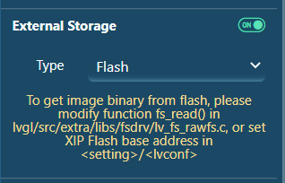

To add an image widget and set its properties, perform the following steps:
Click img in the Widgets tab and a new image widget is added into the workspace. Set "External Storage" as "on" and make sure "flash" type is selected.Figure: Set external storage

Import the local image file and set it in the image widget attribute.